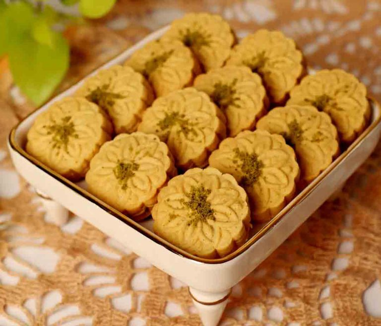
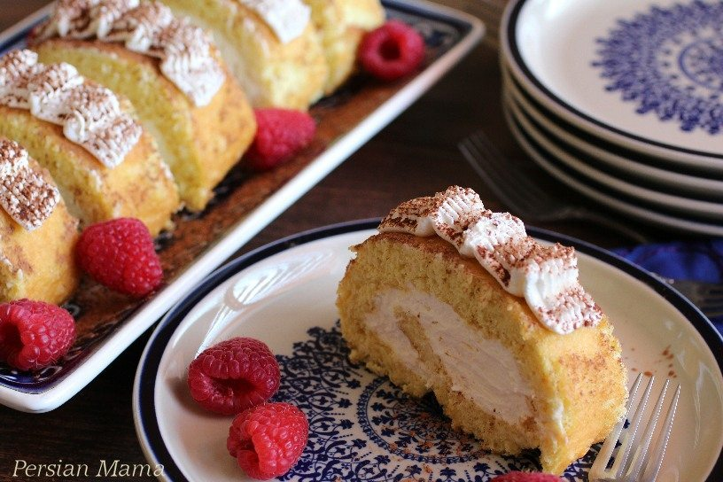
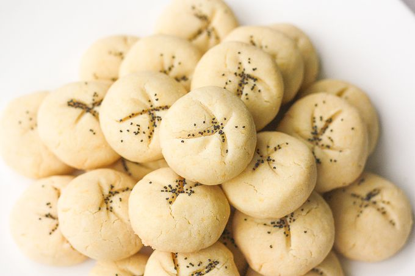
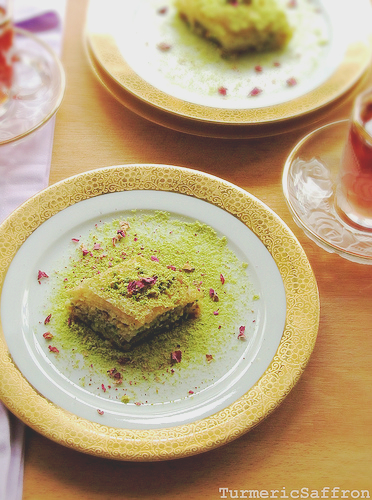

Nokhodchi

- Ingredients: Made with chickpea flour, sugar, and cardamom, giving it a unique nutty flavor.
- Shape: Traditionally shaped into small clover-leaf patterns.
- Texture: Crumbly and melt-in-your-mouth due to the chickpea flour base.
Kolompeh

- Filling: Filled with a date paste, sometimes mixed with chopped walnuts and spices like cardamom and cinnamon.
- Strong: Decorated with intricate designs pressed into the dough using special molds
- Region:A specialty of Kerman, known for its use of local dates and rich flavors.
Zoolbia and Bamieh
- Zoolbia: Crispy, spiral-shaped fried dough soaked in a saffron and rosewater syrup.
- Bamieh: Small, deep-fried doughnut-like pastries with a similar syrup glaze.
- Occasion:Traditionally served during Ramadan as a sweet treat to break the fast.
Roulette

- Dietary Note: Gluten-free due to the use of rice flour, making it a popular choice for those avoiding wheat.
- Flavor: The sponge cake is often infused with saffron or rosewater, giving it a distinctive Persian aroma and taste.
- Presentation: Typically dusted with powdered sugar and sometimes garnished with pistachios or other nuts for added texture and flavor.
Berenji

- Base: Made from rice flour, giving it a delicate, crumbly texture.
- Flavor: Subtly flavored with rosewater and often topped with poppy seeds.
- Dietary Note: Gluten-free due to the use of rice flour, making it a popular choice for those avoiding wheat.
Saffron Baklava

- Flavor: Sweet, rich pastry filled with chopped nuts (usually pistachios or walnuts) and spiced with cardamom and saffron.
- Layers: Made with thin sheets of filo dough that become flaky when baked.
- Syrup: Drizzled with a sugar syrup infused with rosewater, saffron, and lemon.